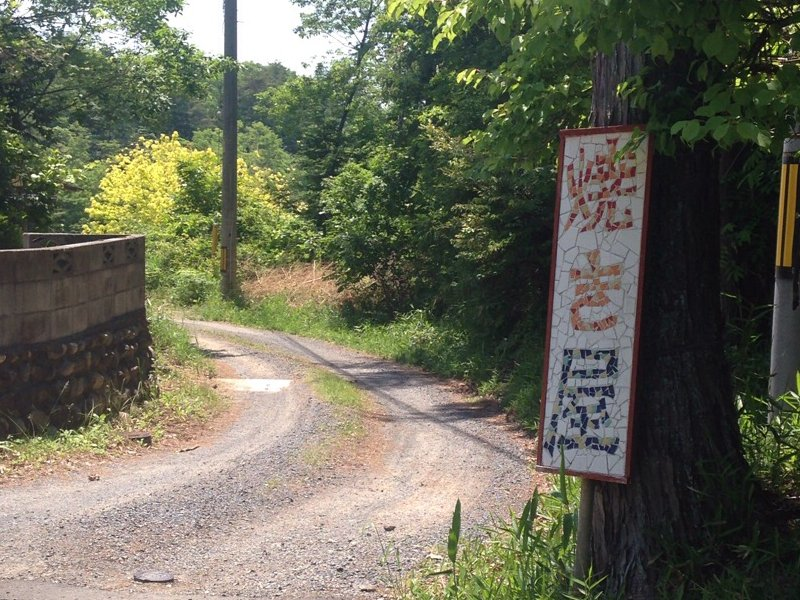

岡山の石窯パンの店を訪問しました。
ハード系の２店舗「焼き屋」と「雪ボーロ」へ行きました。
焼き屋さんは、道の駅「円城」からすぐのところに有り、とても分かりやすい場所です。と、言ってもお店の近くの道は狭いので迷わないようにして下さい。

道にキジが歩いていたり、綺麗な虫たちがいたりで私の小さいころの山を想い出す風景がまだまだ沢山残っています。
ご夫婦と小さな子供がお出迎えしてくれました。

ここのパンは表面が本当に硬いです。我が家では、薄くスライスしてから食べてます。今回買ったのは、カンパーニュ、クルミ入りパン、ぶどう入りパン、季節のよもぎパンです。
値段も300円ちょっととお手頃な値段です。近ければいいのになぁ、と思います。

ここの石窯パンは焼く時に水蒸気を使います。最近のレンジも水蒸気を使ったものが出てますが、ここはそれを石窯だけでもすごいのに水蒸気を使って焼いているのがすごいです。
**焼き屋 [#q12c369e]
-住所 岡山県加賀郡吉備中央町上田西2025-2
-電話 0867-34-1564
近くに吉田牧場もあるのでチーズをここで買わない手はないです。チーズと一緒に焼き屋のパンがいいですね。

**吉田牧場 [#pf1cb7e2]
-住所 岡山県加賀郡吉備中央町上田東２３９０−３
-電話 0867-34-1189
雪ボーロさんは、これで三度目の訪問ですが道に迷ってしまいました。江与味ふれあい会館までは辿りつけますがそこから、どんどん山の中に入っていくので注意が必要です。

以前は、こんな看板の道案内が有ったのですが、今は古くなって見えないところもありました。
雪ボーロさんは、土曜日だけの営業で訪問した日はパンが無かったのですが、石窯が以前のが崩れたとかで新しい石窯を店もらいました。

始めて訪問したときは、石窯の土台を瓦をひいて作る工程などをご主人が詳しく教えてくれたことを思い出しました。
今度は、土曜日に訪問してみようと思います。
こんな物を見つけました。何だか分かりますか？

ミツバチの巣箱です。今年はミツバチが来なかったそうですが、ミツバチの分封（ぶんぽう）を知っている人は少ないかもしれませんが、ミツバチが元の巣から分かれて新しい巣を見つけることを言うのですが、見たことが有る人じゃないとあのすごさは言い表せません。田舎の暮らしってこんなのができていいなぁって思います。
分封（ぶんぽう）をインターネットで検索して見て下さい。

**雪ボーロ [#e17038af]
-住所 岡山県久米郡美咲町江与味２６３９−４
-電話 0867-27-2402
広島からのドライブにお勧めのコースを最後に紹介しておきます。
広島から総社ＩＣを目指します。
最上稲荷の鳥居を見て、足守に有る蕎麦屋「田田」で手打ち蕎麦を食べます。

ここに11時半頃到着するように行くのがいいかも。
そのあとは、焼き屋を目指します。
石窯パンを買って、次に吉田牧場でチーズを買いましょう。
**田田 [#y9c72ff0]
-住所 岡山県岡山市北区大井579
-電話 090-7996-4480
楽しい一日になること間違い無しです。